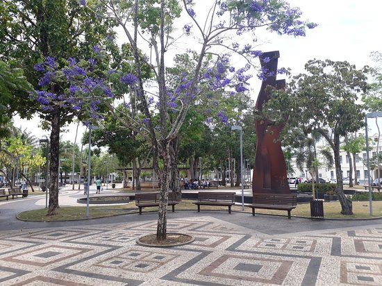
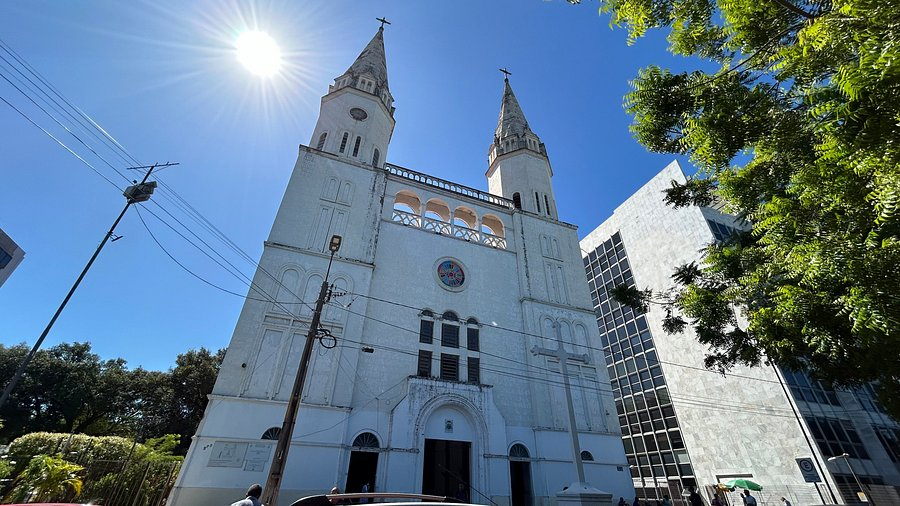
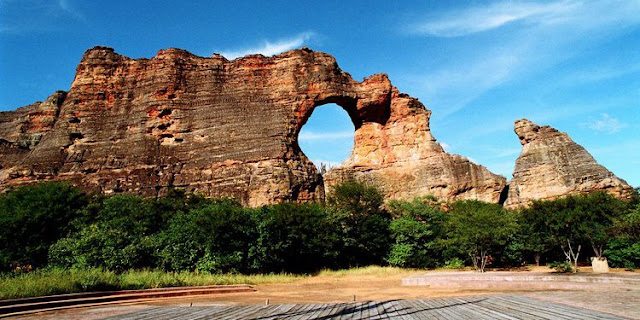
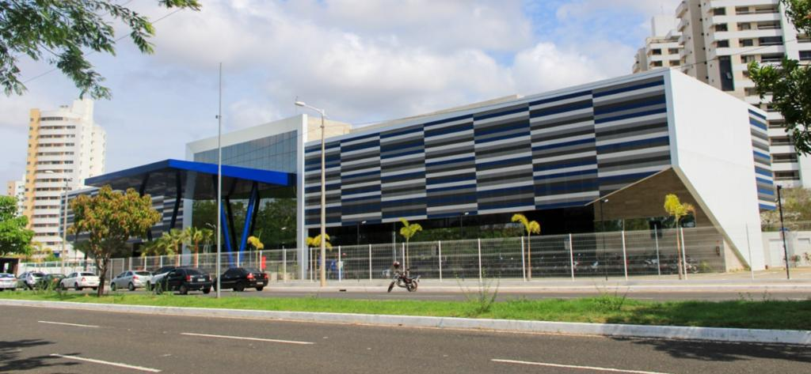

Teresina
Teresina, a capital do estado do Piauí, é uma cidade que se destaca pelo seu clima quente, suas paisagens naturais e um vasto patrimônio cultural. Embora não seja uma das cidades mais turísticas do Brasil, Teresina tem ganhado destaque nos últimos anos, especialmente por sua arquitetura, hospitalidade e rica tradição em festas populares. A cidade é ponto de passagem para quem visita o Parque Nacional de Jericoacoara e outras regiões do estado, mas também possui atrativos próprios, como suas margens do Rio Parnaíba e suas praças históricas.
Teresina é conhecida pelo seu calor durante o ano todo, mas, por outro lado, oferece uma excelente infraestrutura para o turismo, com diversos museus, centros culturais e atrações naturais. A cidade também preserva sua cultura nordestina, com destaque para as festas de São João e o Carnaval de Teresina. Embora o turismo ainda seja algo em crescimento na cidade, Teresina é considerada uma boa opção para quem deseja conhecer o interior do Nordeste brasileiro de forma mais tranquila e autêntica.
Principais pontos turísticos
- Encontro dos Rios Parnaíba e Poti
- Palácio Karnak
- Praça Rio Branco 
- Igreja Nossa Senhora do Amparo 
- Parque Nacional de Sete Cidades 
O Encontro dos Rios Parnaíba e Poti é uma das maiores atrações naturais de Teresina, localizado nas margens desses dois rios. O local oferece uma bela vista e é perfeito para passeios de barco. Uma excelente opção para quem deseja explorar a natureza local, o encontro dos rios se tornou um símbolo da cidade e é um ponto importante para o ecoturismo em Teresina.
O Palácio Karnak é um dos principais pontos históricos e culturais de Teresina. Construído no século XIX, o palácio abriga o governo do estado do Piauí e está aberto ao público, sendo possível visitar suas instalações. A arquitetura do edifício mistura influências europeias e brasileiras, o que o torna um importante patrimônio histórico e um ponto de referência para quem visita a cidade.
A Praça Rio Branco é um dos espaços públicos mais tradicionais de Teresina. Localizada no centro da cidade, a praça é cercada por prédios históricos, como a Igreja de São Benedito e o Teatro 4 de Setembro. Além disso, a praça tem importância cultural por ser o local onde ocorrem diversos eventos e festas ao longo do ano, especialmente no São João.
A Igreja Nossa Senhora do Amparo é um importante ponto histórico e religioso em Teresina, Piauí. Construída no século XIX, ela se destaca pela sua arquitetura simples, porém encantadora, que remonta ao estilo colonial brasileiro. Localizada no centro da cidade, a igreja foi uma das primeiras a ser erguida na capital piauiense e é dedicada a Nossa Senhora do Amparo, padroeira de Teresina. A igreja desempenhou um papel importante na formação da cidade, sendo um local de fé e devoção para os moradores ao longo dos anos.
Além de sua relevância religiosa, a Igreja Nossa Senhora do Amparo também é um marco histórico, refletindo o processo de urbanização e desenvolvimento de Teresina. Com uma arquitetura modesta, mas de grande valor simbólico, a igreja atrai tanto fiéis quanto turistas interessados em conhecer um pouco mais da história e cultura religiosa da cidade. Ela é um exemplo da religiosidade presente em Teresina, sendo um local de celebrações e eventos litúrgicos importantes para a comunidade local.
Embora não esteja dentro de Teresina, o Parque Nacional de Sete Cidades fica relativamente perto da cidade e é uma das maiores atrações turísticas da região. O parque é conhecido pelas suas formações rochosas e trilhas que oferecem vistas deslumbrantes. É um excelente local para os amantes da natureza e do ecoturismo.
Principais pontos gastronômicos
- Grand Cru
- Localização: Bairro Fátima.
- Coco Bambu
- Localização: Bairro Fátima.
- Favoritos Comidas Típicas
- Localização: Bairro Fátima.
- Vertigo Restaurante
- Localização: Bairro Ininga.
O Grand Cru é um dos melhores restaurantes para provar a cozinha internacional em Teresina. Entre os destaques do seu cardápio estão pratos feitos com anchovas, pato e arroz preto. Além disso, o local tem uma ótima carta de vinho e uma seleção completa de outras bebidas. O ambiente é aconchegante e descontraído, com música ao vivo. E os valores dos pratos são acessíveis, permitindo que você experimente refeições elaboradas sem gastar muito.
O restaurante trabalha somente com reserva e funciona todos os dias da semana.
Um dos destaques entre os restaurantes de Teresina, o Coco Bambu tem ambientes charmosos e diferenciados para atender vários perfis de clientes. Parte de uma rede de restaurantes presente em várias partes do Brasil, a unidade de Teresina difere das demais pelo toque piauiense. Seus ambientes são cheios de estilo e o atendimento é excelente.
O cardápio traz várias delícias regionais, como carne de sol, macaxeira, baião de dois e paçoca. E, para compor os pratos, o Coco Bambu utiliza apenas ingredientes autênticos e locais. O restaurante trabalha com o sistema de buffet, em que os clientes podem servir-se à vontade. Além disso, frequentemente realiza promoções, com pratos para duas pessoas, por exemplo.
O Favoritos Comidas Típicas traz a oportunidade de se provar o melhor da culinária do Piauí, como o próprio nome revela. A especialidade desse restaurante de Teresina são, justamente, os pratos típicos da gastronomia piauiense. Lá você encontrará refeições com carneiro, galinha caipira, carne de sol, peixes e frutos do mar. E poderá provar o destaque do cardápio, o arroz com capote.
O restaurante tem um ambiente super aconchegante, com meia iluminação e decoração rústica, com peças produzidas por artesãos do Piauí. Portanto, é um lugar para comer e se sentir bem em Teresina que não pode faltar em seu roteiro.
Descubra a experiência gastronômica única do Vertigo Restaurante, onde a sofisticação encontra a culinária requintada. Localizado próximo a pontos turísticos, o restaurante é famoso por suas entradas deliciosas e um ambiente acolhedor que torna qualquer ocasião especial. Com serviço impecável e um cardápio variado, é o destino perfeito para os amantes da boa mesa que desejam surpreender seus sentidos.
Principais pontos culturais
- Teatro 4 de Setembro
- Localização: Centro de Teresina.
- Museu de Arte do Piauí (MAPI)
- Localização: Centro de Teresina.
- Centro Cultural Sesc Rio Poty 
- Localização: Bairro Noivos.
- Casa da Cultura
- Localização: Centro de Teresina.
O Teatro 4 de Setembro é um dos principais espaços culturais de Teresina e um importante marco da cidade. Fundado no final do século XIX, o teatro tem uma programação variada que inclui peças de teatro, shows de música e dança. Sua arquitetura imponente e sua importância histórica o tornam um local imperdível para quem deseja vivenciar a cultura local.
O Museu de Arte do Piauí é uma das maiores instituições culturais da cidade, com um acervo de arte moderna e contemporânea. O museu organiza exposições temporárias e eventos culturais, além de promover a arte local e nacional. Está localizado no Palácio da Cultura, um edifício histórico de grande importância para o turismo e a cultura de Teresina.
O Centro Cultural Sesc Rio Poty é um espaço cultural que oferece uma série de atividades, como apresentações de teatro, música, exposições de arte e outras manifestações culturais. Localizado às margens do Rio Poty, o centro é um importante ponto de referência para os amantes das artes em Teresina.
A Casa da Cultura de Teresina é um importante centro cultural da cidade, dedicado à preservação e promoção das manifestações artísticas, históricas e culturais do Piauí. Localizada no centro histórico de Teresina, a Casa da Cultura está instalada em um edifício antigo, que já foi residência e sede de diversas instituições ao longo da história da cidade. O espaço tem como objetivo ser um ponto de encontro para a comunidade e para os visitantes interessados em conhecer a rica cultura local.
Dentro da Casa da Cultura, os visitantes podem encontrar exposições de arte, apresentações de música, dança, teatro e outras manifestações culturais típicas do Piauí. Além disso, a Casa também oferece atividades educativas e eventos que visam aproximar a população das tradições regionais, com destaque para o folclore piauiense e as influências indígenas e afro-brasileiras presentes na cultura local.